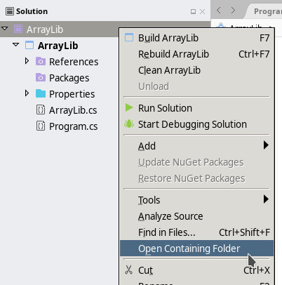

Zip File Guide
May 22, 2024 (01:30:37 PM)
This short note explains how to
- Unzip files,
- Zip folders,
- Locate your project
for the three main operating systems (Windows, Linux and macOS).
Unzipping Files
Windows
Navigate your file explorer and navigate to your Downloads folder (or wherever you downloaded the file). From there, look for the file you downloaded, right-click, and select “Extract All…”. When the “Extract Compressed (Zipped) Folder” window opens, click the “Extract” button.
Linux
This guide is assuming you have Zip/Unzip installed on your Linux distribution. If this is not the case, first follow this install guide.
Using the graphical interface
Normally, a simple right click and choose “Extract” or “Open with Ark” should do it.
Using the Command-Line
Navigate to your command-line interface and execute the following
command (as a normal user, as indicated by $):
$ unzip [FileName].zipwhere “[FileName].zip” is the name of the zip file.
macOS
Simply double-click on the zip file to unzip it onto your desktop.
Zipping Files
Windows
Navigate to your file explorer and go to where your solution is stored on your system, the default file path being:
C:\Users\[UserName]\source\reposwhere “[UserName]” is your Windows username (on school computers, this should be your AU username). Right click the folder you want to zip, go down the list to the “Send to” option, and then click on the “Compressed (Zipped) Folder” option. This should then create a new zip file.
Linux
Using the graphical interface
Normally, a simple right click and choose “Compress” should do it.
Using the Command-Line
Navigate to your command-line interface and execute the following
command (as a normal user, as indicated by $):
$ zip -r [ZipFileName].zip [FileName]where “[ZipFileName].zip” is the name you want for the zip file, and “[FileName]” for the folder you want to zip.
macOS
Navigate to your file explorer and go to where your solution is stored on your system, the default file path being:
[UserName]\source\reposwhere “[UserName]” is your Mac username. Right-click on the folder that you want to zip up and click on the “Compress the Folder” option.
But Where Is My Project?
By default, it should be stored in a folder located in
C:\Users\[UserName]\source\reposfor Windows users,
[UserName]\source\reposfor macOS users,
/home/[UserName]/Projectsfor Linux users.
When in doubt, open your project in the IDE, right-click on the solution, and look for an option called “Open in File Explorer” or “Open Containing Folder”:
